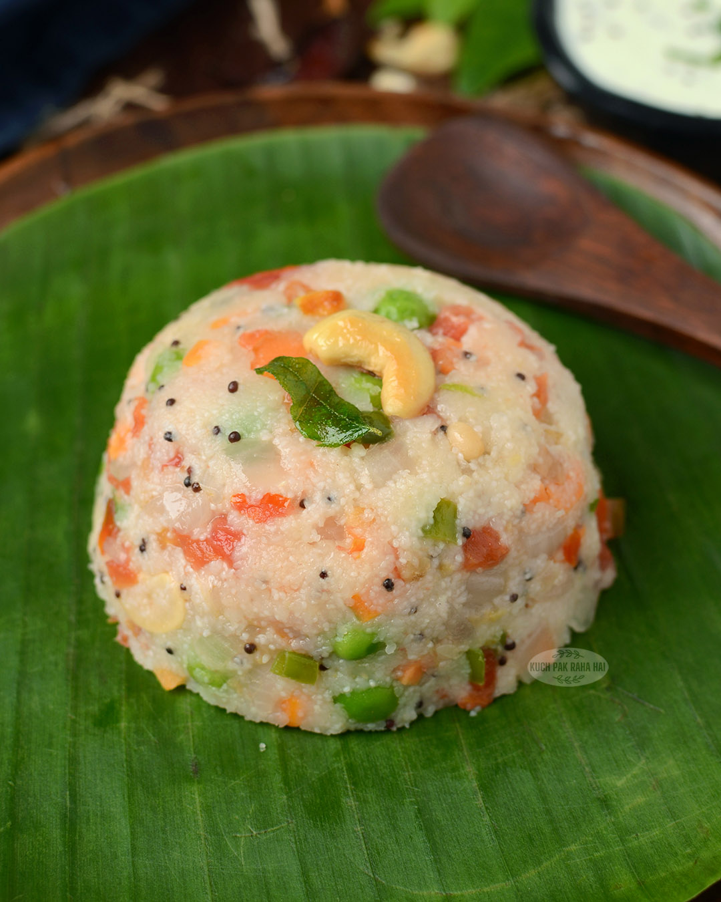
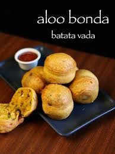

Semolina, Water, Onion, Green Chilies, Mustard Seeds, Urad Dal, Curry Leaves, Oil and Salt.
Roast semolina. Heat oil and add mustard seeds, curry leaves and onions. Add water and cook until soft.

Potato, Onion, Green Chilies, Curry Leaves, Gram Flour, Turmeric and Oil.
Prepare potato filling, dip in gram flour batter and deep fry until golden.
